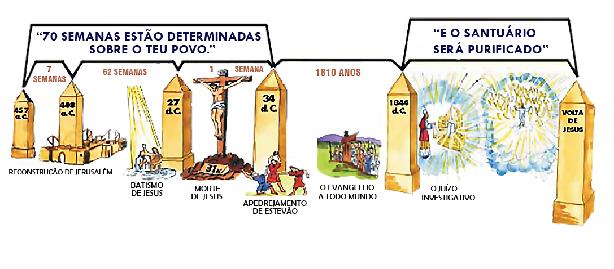
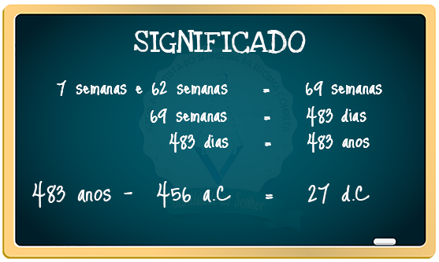

O Juízo Investigativo é realizado no céu. Envolve os justos mortos e os justos vivos, cujos nomes estão escritos no livro da vida. Ocorre no santuário celestial, onde cada caso será decidido, ou para vida ou para morte, obra realizada no segundo compartimento chamado de Santíssimo. Ellen White, destaca.
Cada caso fora decidido para a vida ou para a morte. Enquanto Jesus estivera ministrando no santuário, o juízo estivera em andamento pelos justos mortos, e a seguir pelos justos vivos. Cristo recebera Seu reino, tendo feito expiação pelo Seu povo, e apagado os seus pecados. Retirando-Se Jesus do lugar santíssimo, ouvi o tilintar das campainhas sobre Suas vestes; e, ao sair Ele, uma nuvem de trevas cobriu os habitantes da Terra. Não havia então mediador entre o homem culpado e Deus, que fora ofendido.
Ellen G. White, Primeiros Escritos, pág 279-280
Essa obra necessita de exame, através do juízo investigativo, dos livros de registro para determinar quem, pelo arrependimento dos pecados e fé em Cristo, tem direito aos benefícios de Sua expiação. A purificação do santuário, portanto, envolve uma obra de juízo investigativo. Na antiguidade essa obra era feita no Santuário e depois no Templo de Jerusalém, sendo simbolizados pelo Dia da Expiação.
Assim como no dia da expiação, prefigurado no santuário terrestre, eram removidos os pecados confessados somente do pecador verdadeiramente penitente, da mesma forma, a primeira fase do julgamento no céu removerá e apagará os pecados registrados daqueles que aceitaram a verdade e estão vestidos com as roupas da natureza divina de Cristo. No entanto, nem todos os professos seguidores de Jesus são genuínos. Assim, a fase investigativa vai separar o verdadeiro discípulo (trigo) de Jesus daqueles que professam, mas negam com suas obras (joio).
A morte vicariante (substituta) de Jesus, cumprindo mais uma etapa do plano de redenção, referente aos tipos do primeiro advento, rompeu com o sistema sacrifical e o culto de templo conforme anuência do verso 51 que dormita no capítulo 27 de Mateus asseverando que: Mateus 27:51. Estava aberto o caminho para o Santuário celestial onde Jesus após ser entronizado no céu como rei e sacerdote segundo a ordem de Melquisedeque, ministra como Sumo Sacerdote nos dito da lavra do apóstolo João: João 14:6. O Templo de Jerusalém possuía três portas principais, a porta do pátio era chamada CAMINHO, a porta do lugar Santo VERDADE e porta do Santíssimo chamada de VIDA. Jesus representa estas portas, Ele mesmo elucidou essa verdade quando disse: João 10:7;9. Cristo representa as três portas do santuário que dão acesso ao Pai, ninguém vai ao Pai sem passar por essas portas. O acesso ao Pai está umbilicalmente ligado ao Santuário através destas portas símbolo de Jesus; que ministra como Sumo Sacerdote no santuário celestial que serviu de modelo, veja: Salmos 77:13. O caminho de acesso a Deus passa pelo santuário com o sangue de Cristo: Hebreus 10:19.
O Senhor limitou um tempo para purificação do santuário: Daniel 8:14. Na verdade a purificação do santuário também representa a purificação da igreja e eliminação do pecado. Dentro do plano de redenção, foi estabelecido que o santuário seria purificado ao término das setenta semanas proféticas, disse o profeta Daniel: Daniel 9:24. O renomado pioneiro Jones nos esclarece:
"Setenta semanas", ou 490 destes dias, estão separados ou cortados (limitados) para os judeus e Jerusalém. Isto assinala os limites do tempo para os judeus e Jerusalém como povo e cidade especiais de Deus. Tratam-se de dias proféticos, nos quais cada dia corresponde a um ano: as 70 semanas, ou 490 dias vem a ser 490 anos, separados (tomados) dos 2.300 dias, que por sua vez são dois mil e trezentos anos. O princípio dos 490 anos é pois coincidente com o dos 2.300 anos.
Jones, Alonzo T. 2011, O Caminho Consagrado a Perfeição Cristã, pág 74
- Para melhor compreensão do tema em tela, vale lembrar que em profecia cada dia corresponde a um ano (Ezequiel 4:7)
Por certo, os 2.300 dias ou anos, dentro deste período profético foi retirado das setenta semanas ou 490 anos para arrependimento do povo eleito (judeus, esta fase termina no ano 34 d.C), restando 1810 anos para completar os 2.300 anos, que culminou no ano de 1844, onde Jesus como sumo sacerdote começa o ofício no santíssimo para limpeza do santuário, período que foi concedido para arrependimento dos gentios. Segundo escritos de Paulo, o serviço anual da expiação no segundo compartimento, realizado pelo sumo sacerdote, só poderia começar quando terminassem os trabalhos diário dos sacerdotes no primeiro compartimento. Este é o motivo de Cristo entrar no santíssimo em 1844; ano em que seguindo o curso profético, Cristo encerrou seu oficio no primeiro compartimento. Hebreus 9:6-8. Houve a substituição do santuário terrestre pelo celestial, como as ofertas, não mais com sangue de touros ou carneiros. Hebreus 9:11. Restando comprovado, que o santuário terrestre com todo sistema e ritual era uma figura, de acordo com ensinamentos de Paulo: Hebreus 9:23-24.

Setenta semanas são 490 anos (7 x 70 = 490) que o Senhor havia determinado sobre o povo judeu para se arrependerem, veja que as setenta semanas foram retiradas dos 2.300 anos. Esta passagem está esculpida no livro de Daniel, confira: Daniel 9:25-27. O cumprimento dessa profecia, tem como ponto de partida o decreto de Artaxerxes para restaurar Jerusalém no ano de 457 a.C. Seguindo os ensinamentos de Jones:
O decreto para restaurar e reedificar Jerusalém se produziu em 457 a.C., e se encontra registrado no capítulo 7 de Esdras. Quando Esdras chegou a Jerusalém era o quinto mês do ano, portanto a restauração devia começar a partir do outono de 457a.C., o que nos conduz ao ano 456 ¼ como data de partida dos 490 anos, e dos 2300 anos.
Jones, Alonzo T. 2011, O Caminho Consagrado a Perfeição Cristã, pág 74–75
Tirando uma semana profética (sete anos) das setenta semanas (490 anos), restaria 483 anos até o messias, que firmaria aliança com muitos e faria cessar os sacrifícios com sua morte. Mais uma vez Jones nos presta copioso auxilio
A partir de então, 483 anos conduziriam ao "Messias Príncipe", o que leva ao ano 26 e ¾ da era cristã, isto é, o ano 27d.C., que é precisamente o ano no qual Cristo fez Sua aparição como Messias, "fará aliança com muitos" "por uma semana", ou seja, a semana que faltava para completar as 70. Mas na metade desta semana, "fará cessar o sacrifício e a oferta de manjares" pelo sacrifício de si mesmo na cruz. A metade da semana tem que ser ao final dos três anos e meio, daqueles sete, a contando desde o outono de 27d.C. Isto conduz à primavera do ano 31d.C., no preciso momento em que o Salvador foi crucificado; e deste modo, mediante Seu próprio sacrifício, o autêntico sacrifício pelos pecados, fez cessar para sempre o sacrifício e a oferta de manjares. Nesta ocasião, o véu do templo terreno "se rasgou em dois, desde em cima até embaixo", indicando que o serviço de Deus chegava ao seu final naquele lugar, e a casa terrena seria deixada deserta.
Jones, Alonzo T. 2011, O Caminho Consagrado a Perfeição Cristã, pág 75
Segundo escritos da lavra do apóstolo Mateus Mateus 27:51. Quando Jesus morreu o véu do templo rasgou em dois de alto a baixo, prefigurando que o culto de templo havia findado, doravante, seguiriam os cultos de sinagogas, logo, fica inviável acreditarmos que o santuário que seria purificado por Cristo fosse o santuário terrestre, pois a obra neste dito santuário havia findado, o qual não aconteceria no santuário celestial, onde a obra de purificação teve inicio no fim dos 2300 dias, ou seja 1844. Observe que esta última semana profética das setenta finda no ano 34 com a morte de estevão, restando 1810 anos para arrependimento dos gentios. Jones, destaca ainda:
Ficava no entanto a segunda metade da 70ª semana, dentro do limite de tempo ao qual o povo judeu e Jerusalém contariam com o favor especial. Esta semana teve início na primavera do ano 31 de nossa era, e se estendia até o outono de 34 d.C. Naquele tempo, "os que haviam sido espalhados pela perseguição que veio depois de Estevão, iam por todas as partes. Após os 490 anos separados para os judeus e Jerusalém, ficam ainda 1810 anos para os gentios (2.300 - 490 = 1810). Esse período dos 1.810 anos, começando, como vimos, no outono do ano 34 de nossa era, conduz de forma precisa ao ano de 1844, marcando esta data como sendo o final dos 2.300 anos. E nesse tempo, por palavra de quem não pode equivocar-se (Dan. 8:14), "o santuário será purificado". 1844 foi igualmente o preciso tempo "dos dias da voz do sétimo anjo, quando ele começar a tocar a trombeta", e o mistério de Deus será consumado, como Ele anunciou aos Seus servos os profetas. Nesta época se quebrantaria o horror das densas trevas com as quais o mistério da iniquidade ocultou pelas gerações o mistério de Deus.
Jones, Alonzo T. 2011, O Caminho Consagrado a Perfeição Cristã, pág 76
PARTE II
Foi exatamente em 1844, período da igreja de Filadélfia que Cristo fechou uma porta, findou a obra do primeiro compartimento do santuário celestial, abrindo a segunda porta, pois, a nenhum outro foi conferido poder para abri-la, somente ele estava habilitado como sumo sacerdote para iniciar a obra de expiação ou juízo investigativo, com seu próprio sangue, para purificar o santuário e eliminar o pecado. O profeta João viu e relatou este glorioso evento: Apocalipse 3:7-8. Ademais, enquanto a primeira porta estava aberta, Cristo não podia iniciar a obra do segundo compartimento ou segunda porta, Paulo chamou nossa atenção para este acontecimento quando disse: Hebreus 9:8. À luz do livro O Grande Conflito, White, complementa o alegado, destacando:
No cerimonial do santuário terrestre, que, conforme vimos, é uma figura do serviço no santuário celestial, quando o sumo sacerdote no dia da expiação entrava no lugar santíssimo, cessava o ministério no primeiro compartimento. Deus ordenara: "E nenhum homem estará na tenda da congregação quando ele entrar a fazer propiciação no santuário, até que ele saia." Lev. 16:17. Assim, quando Cristo entrou no lugar santíssimo para efetuar a obra final da expiação, terminou Seu ministério no primeiro compartimento. Mas, quando o ministério no primeiro compartimento terminou, iniciou-se o do segundo compartimento. Quando, no cerimonial típico, o sumo sacerdote deixava o lugar santo no dia da expiação, entrava perante Deus para apresentar o sangue da oferta pelo pecado, em favor de todos os israelitas que verdadeiramente se arrependiam de suas transgressões. Assim Cristo apenas completara uma parte de Sua obra como nosso intercessor para iniciar outra, e ainda pleiteia com Seu sangue, perante o Pai, em favor dos pecadores.
Ellen G. White, O Grande Conflito, pág 428
Jesus fechou a porta do primeiro compartimento do santuário celestial em 1844, e abriu os trabalhos do segundo compartimento, prefigurado pelo dia da expiação, para purificação do santuário. A purificação do santuário e a consumação do mistério de Deus estão relacionados. No santuário terrestre, a sucessão dos serviços formava um ciclo que completava anualmente. E a purificação do santuário era a consumação deste serviço anual figurativo. Esta purificação do santuário está prefigurada na limpeza e eliminação das imundícies dos filhos de Israel, e de suas rebeliões, e de todos seus pecados que, mediante o ministério sacerdotal, haviam sido levados ao santuário durante o ano, ou seja, o dia da expiação, de acordo com escritos de Moisés: Levítico 16:16. White, nos relata quem era beneficiado pela expiação, tanto no cerimonial típico, como no grande dia da expiação:
No cerimonial típico, somente os que tinham vindo perante Deus com confissão e arrependimento, e cujos pecados, por meio do sangue da oferta para o pecado, eram transferidos para o santuário, é que tinham parte na cerimônia do dia da expiação. Assim, no grande dia da expiação final e do juízo de investigação, os únicos casos a serem considerados são os do povo professo de Deus. O julgamento dos ímpios constitui obra distinta e separada, e ocorre em ocasião posterior.
Ellen G. White, O Grande Conflito, pág 484
No cerimonial típico, os pecados cujas ofertas, eram oferecidas diariamente, eram transferidos para o segundo compartimento do santuário, de acordo com esclarecimentos de White:
Como antigamente eram os pecados do povo colocados, pela fé, sobre a oferta pelo pecado, e, mediante o sangue desta, transferidos simbolicamente para o santuário terrestre, assim em o novo concerto, os pecados dos que se arrependeram são, pela fé, colocados sobre cristo e transferidos de fato, para o santuário celeste. E como a purificação típica do santuário terrestre se efetuava mediante a remoção dos pecados pelos quais se poluíra, igualmente a purificação real do santuário celeste deve efetuar-se pela remoção, ou apagamento, dos pecados que ali estão registrados. Mas antes que isso se possa cumprir, deve haver um exame dos livros de registro para determinar quem, pelo arrependimento dos pecados e fé em Cristo, tem direito aos benefícios de Sua expiação. A purificação do santuário, portanto, envolve uma investigação — um julgamento.
Ellen G. White, O Grande Conflito, pág 420
As sagradas Escrituras relatam, que o dia de apagamento dos pecados ou purificação do santuário, só poderia ser feito seguindo os ditames do Criador esculpidos e ensinados por Moisés: Levítico 23:27-30.

Perdoados, SIM. A renomada profetisa White complementa de forma cristalina:
No cerimonial típico:
"O sangue da oferta pelo pecado removia do penitente o pecado, mas este permanecia no santuário até ao dia da expiação."
Assim, no cerimonial antítipo:
"O sangue de Cristo, ao mesmo tempo que livraria da condenação da lei o pecador arrependido, não cancelaria o pecado; este ficaria registrado no santuário até à expiação final."
Ellen G. White, Patriarcas e Profetas, pág 357
Após a morte são julgados sobre aquelas coisas que foram escritas nos livros.
Então pelo mérito do sangue expiatório de Cristo, os pecados de todos os que verdadeiramente se tenham arrependido serão apagados dos livros do céu. Deste modo o santuário estará livre, ou purificado do pecado.
Ellen G. White, Patriarcas e Profetas, pág 371
Já vimos que Cristo entrou no santuário celestial com seu sangue para apagar os pecados de seu povo, através da obra de Expiação, no dia dez do sétimo mês; realizando o juízo de investigação, examinando os livros para se certificar quem será beneficiado por seu sacrifício expiatório, conferir escritos de White:
No tempo indicado para o juízo - o final dos 2.300 dias, em 1844 - iniciou-se a obra de investigação e apagamento dos pecados. Todos os que já professaram o nome de Cristo serão submetidos àquele exame minucioso. Tanto os vivos como os mortos devem ser julgados "pelas coisas escritas nos livros, segundo as suas obras".
Ellen G. White, 1950, O Grande Conflito, pág 486
Embora todas as nações devam passar em juízo perante Deus, examinará Ele o caso de cada indivíduo, com um exame tão íntimo e penetrante como se não houvesse outro ser na Terra. Cada um deve ser provado, e achado sem mancha ou ruga, ou coisa semelhante.
Ellen G. White, 1950, O Grande Conflito, pág 490
Foi exatamente no ano de 1844, que Jesus entrou no santíssimo, para iniciar a obra de expiação por seu povo, seguindo o curso profético, ostenta White:
Vi que eles estavam certos na sua interpretação dos períodos proféticos; o tempo profético terminou em 1844, e Jesus entrou no lugar santíssimo para purificar o santuário no fim dos dias.
Ellen G. White, Primeiros Escritos, pág 243
Nosso sumo Sacerdote, assistidos por santos anjos, adentra no santíssimo para realizar a obra final em benefício de seu povo, antes do fechamento da porta da graça, seguindo o Plano de Redenção.
Assistido por anjos celestiais, nosso grande Sumo Sacerdote entra no lugar santíssimo, e ali comparece à presença de Deus a fim de Se entregar aos últimos atos de Seu ministério em prol do homem, a saber: realizar a obra do juízo de investigação e fazer expiação por todos os que se verificarem com direito aos benefícios da mesma.
Ellen G. White, 1950, O Grande Conflito, pág 480
Levítico 16:30.
Quem será beneficiado pelo sacrifício expiatório de Cristo? Com certeza, será a sua igreja, na primeira fase do julgamento, aqueles que trilharam o caminho da verdade sem sentir vergonha, que mantiveram a fé que uma vez por todas foi dada aos santos, para amarem e obedecê-la. Os ímpios serão julgados em fase posterior, segundo esclarecedores relatos de White:
Assim, no grande dia da expiação final e do juízo de investigação, os únicos casos a serem considerados são os do povo professo de Deus. O julgamento dos ímpios constitui obra distinta e separada, e ocorre em ocasião posterior. "É tempo que comece o julgamento pela casa de Deus; e, se primeiro começa por nós, qual será o fim daqueles que são desobedientes ao evangelho?" I Ped. 4:17.
Ellen G. White, O Grande Conflito, pág 480
A purificação do Santuário das imundícies dos filhos de Israel, na verdade, era a purificação não só do santuário como do próprio povo. A obra do Santuário culmina com a eliminação do pecado e purificação da igreja de Deus. Obra iniciada em 1844, após Cristo encerrar os trabalhos no primeiro compartimento. Segundo ensinamentos de Jones:
O significado desta purificação está claramente expresso na parte da Escritura que estamos estudando: Dan. 9:24-28. O anjo de Deus, ao explicar a Daniel a verdade concernente aos 2.300 dias, declarou também o grande objetivo do Senhor neste tempo, em relação com os judeus e gentios. As setenta semanas, ou 490 anos delimitados para os judeus e Jerusalém, especifica-se que são "para acabar com a prevaricação. Por fim ao pecado, expiar a iniqüidade, trazer a justiça eterna, selar a visão e a profecia, e ungir o Santo dos santos". Dan. 9:24.
Alonzo T. Jones, 2011, O Caminho Consagrado a Perfeição Cristã, pág 77-78
Estudamos que as setenta semanas foram dadas para o povo Judeu, foi um período de graça concedido aos israelitas, para se arrependerem e confessar seus pecados, este período findou no apedrejamento de Estevão, com total rejeição dos Judeus como nação. Ver escritos de Jones:
Após a rejeição dos judeus, o reino de Deus foi dado às nações gentílicas. E tudo quanto deveria ter sido feito pelos judeus nos 490 anos dedicados a eles, mas que de nenhuma forma consentiram que se realizasse, isto mesmo é o que deve fazer-se pelos gentios, a quem se dá o reino de Deus nos 1810 anos que se lhes concede.
Alonzo T. Jones, 2011, O Caminho Consagrado a Perfeição Cristã, pág 78
No aludido ano 34 d.C, começa o tempo de graça dos gentios, para também se arrependerem de seus pecados, evento mencionado por Paulo: Gálatas 3:8.
Neste texto, Paulo repreende os Judeus, por sua incredulidade e rebeldia e anuncia o evangelho aos gentios, cumprindo as escrituras, seguindo o curso profético do Plano de Redenção, fato considerado absurdo pelos endurecidos judeus, que se firmavam em suas tradições rituais e cerimônias inúteis. Atos 13:46.
Quando Paulo percebeu a obstinação dos judeus, que; Atos 18:6. Então Paulo voltou-se para os gentios: Romanos 11:13.
Cumprindo copiosamente as Escrituras, após findar o tempo dos judeus, iniciando o tempo de graça dos gentios. No juízo investigativo II Coríntios 5:10.
Quando Jesus purificar o santuário e o povo de Deus, tanto judeu como gentio já obtiveram seu tempo de graça, após esse evento, quem for justo continue justo, quem for ímpio continue ímpio, segundo Apocalipse 22:11, ou seja, quem não participar, acompanhar a obra de Cristo no santuário celestial não pode ser beneficiado por sua intercessão. Quem não faz festa de cabana, não acompanha a expiação, com certeza será cortado do povo de Deus, conforme nos relata o tipo.
O plano de Deus seguindo os ditos do profeta Daniel é: Acabar a prevaricação, por fim ao pecado (original, revestindo os crentes com sua natureza divina), expiar a iniquidade, trazer a justiça eterna. Com a purificação do santuário (igreja), a prevaricação, iniquidade e o pecado será expiado (eliminado), na obra do santuário celestial efetuada por Jesus no juízo investigativo ou dia da expiação, então virá a mensagem do terceiro anjo, selamento, chuva serôdia ou tempo de refrigério onde ocorrerá a imputação da justiça eterna que vamos melhor compreender no estudo que segue.